Mazda 6 z silnikiem benzynowym 2.5 L. Wersja wyposażenia SkyPassion w kolorze Deep Crystal 42M i białą tapicerką.
Samochód w stanie bardzo dobrym. Jestem drugim właścicielem, auto zostało wzięte w leasing w salonie Toyota Bednarscy Łysomice we wrześniu 2023.
Przez poprzedniego właściciela i przeze mnie auto serwisowane tylko w ASO. Mogę udostępnić faktury do wglądu. Przeze mnie wykonane standardowe serwisy olejowe i filtry oraz świece, a także w 2024 przy przebiegu około 115.000 km została wykonana dynamiczna wymiana oleju w skrzyni biegów.
Ostatni przegląd (olej, filtr oleju, filtr kabinowy, płyn hamulcowy, czyszczenie układu paliwowego) wykonany na początku grudnia 2025 - auto od tego czasu przejechało ok. 50 km.
Auto jest bezwypadkowe. Z rzeczy które są widoczne w raportach po numerze VIN:
- wymieniona przednia szyba (przez poprzedniego właściciela lub salon),
- pod koniec listopada 2025 auto puknęło na drodze małą sarnę, przez co wystrzeliła aktywna maska i pękł lekko chromowany element zderzaka (ostatnie zdjęcie). W ramach AC zostały wymienione na nowe zderzak, maska i pozostałe elementy plastikowe z przodu oraz wszystkie podzespoły wraz ze sterownikiem od systemu aktywnej maski.
Auto na felgach 17 z oponami zimowymi. Opony letnie na felgach 19 cali (przed ostatnie zdjęcie). Do auta również relingi dachowe Taurus EasyUp 930.
Wystawiam fakturę VAT 23%.
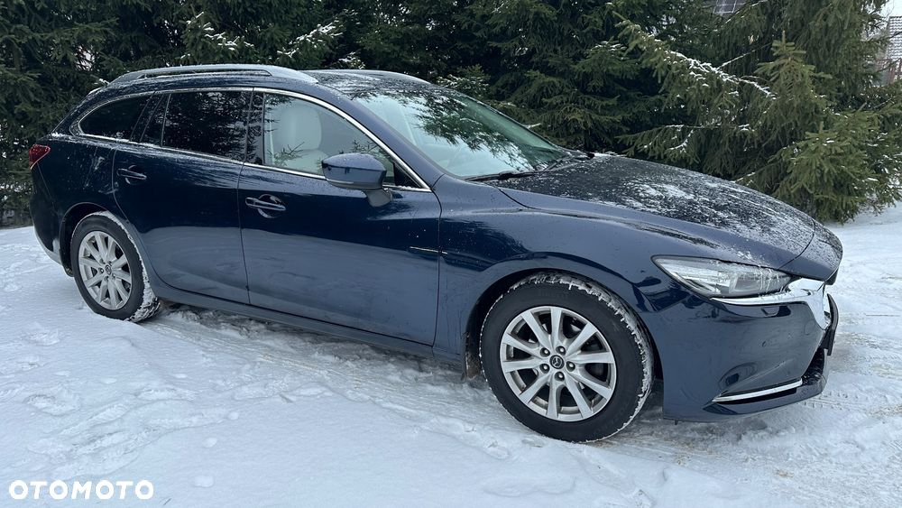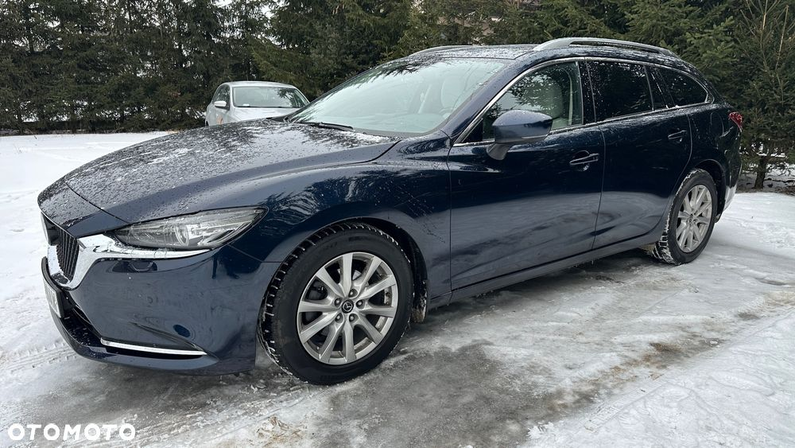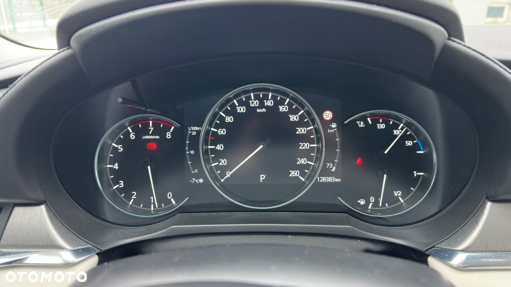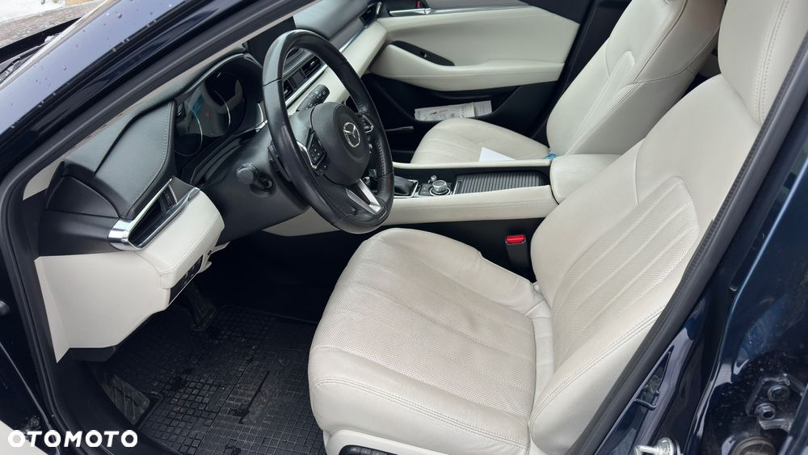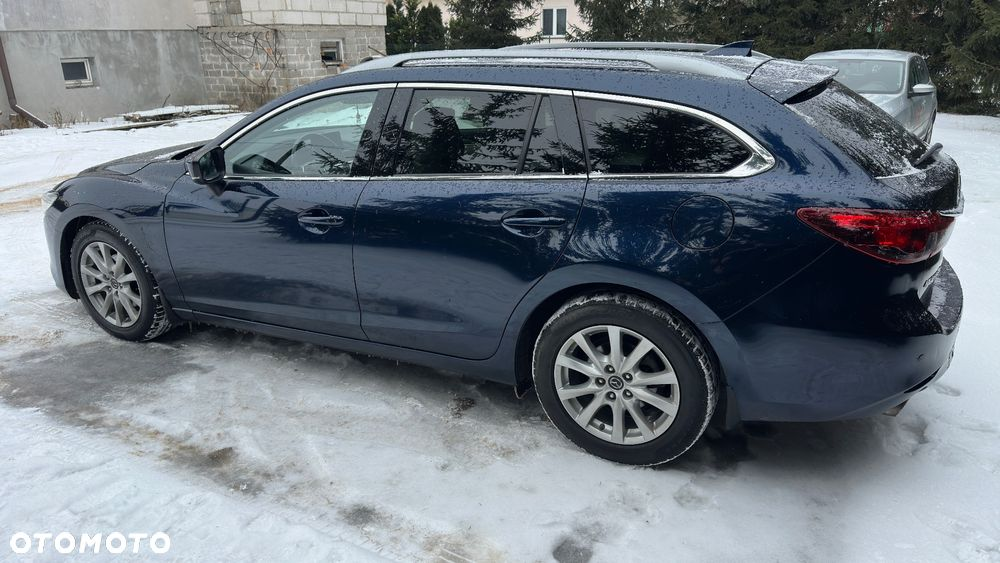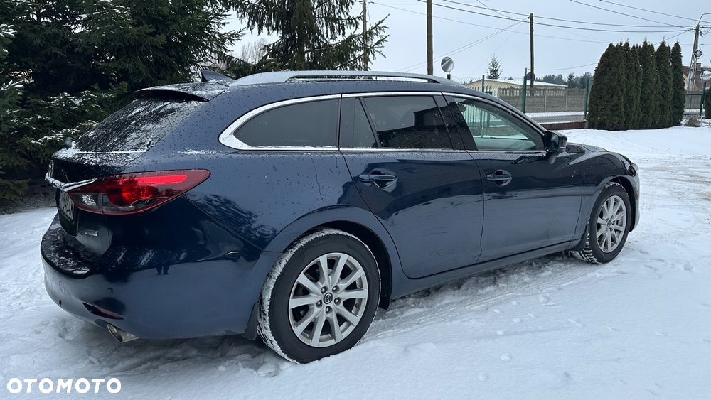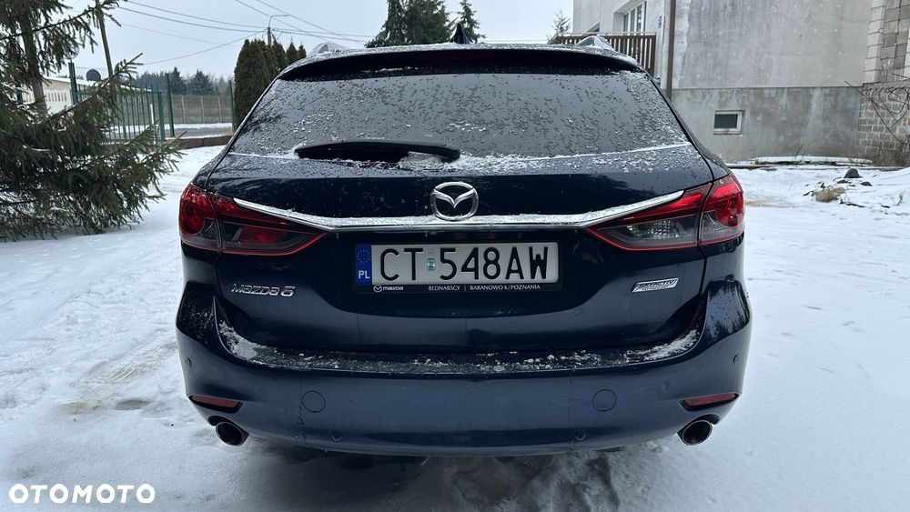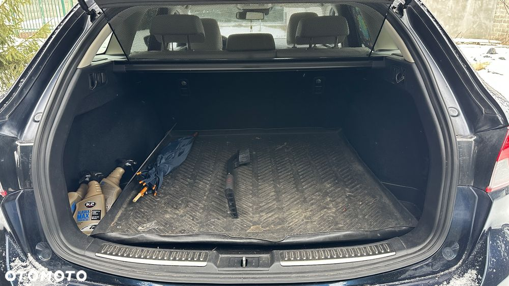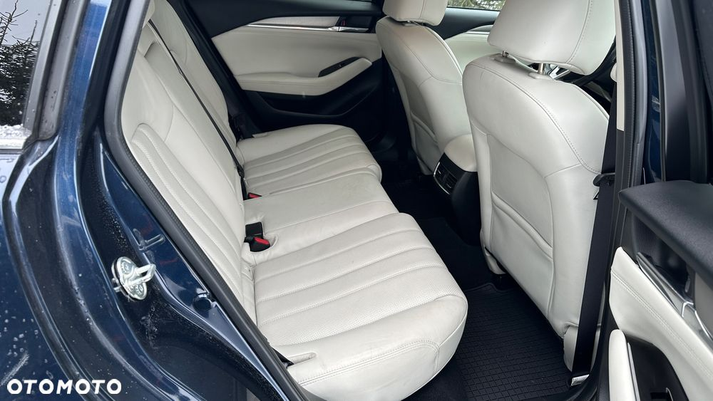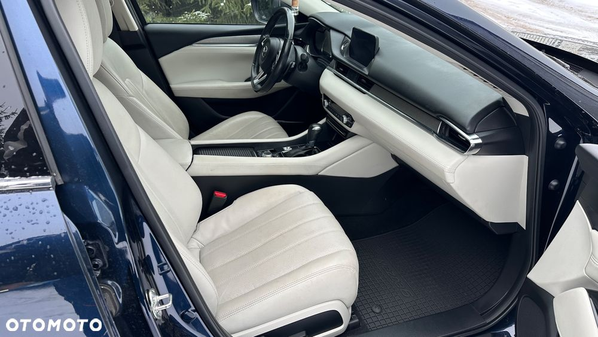 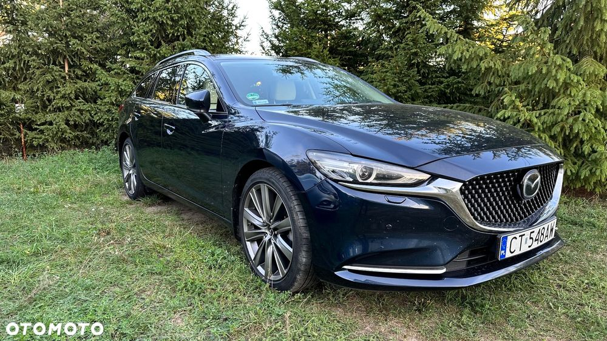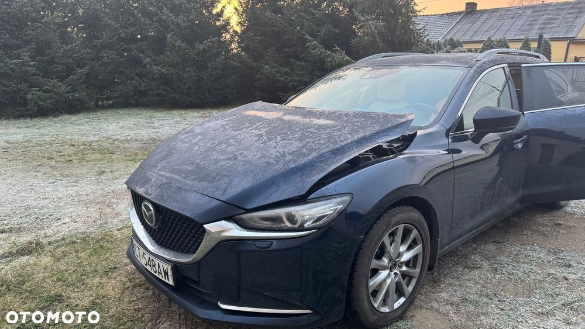
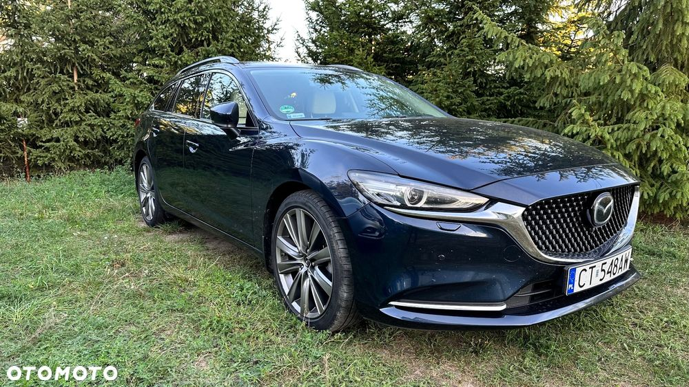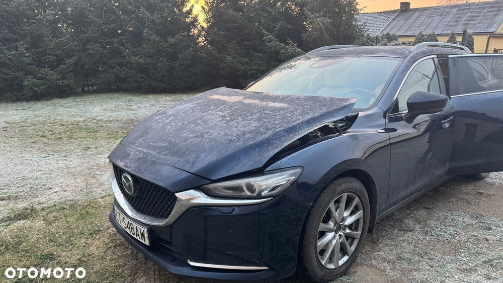